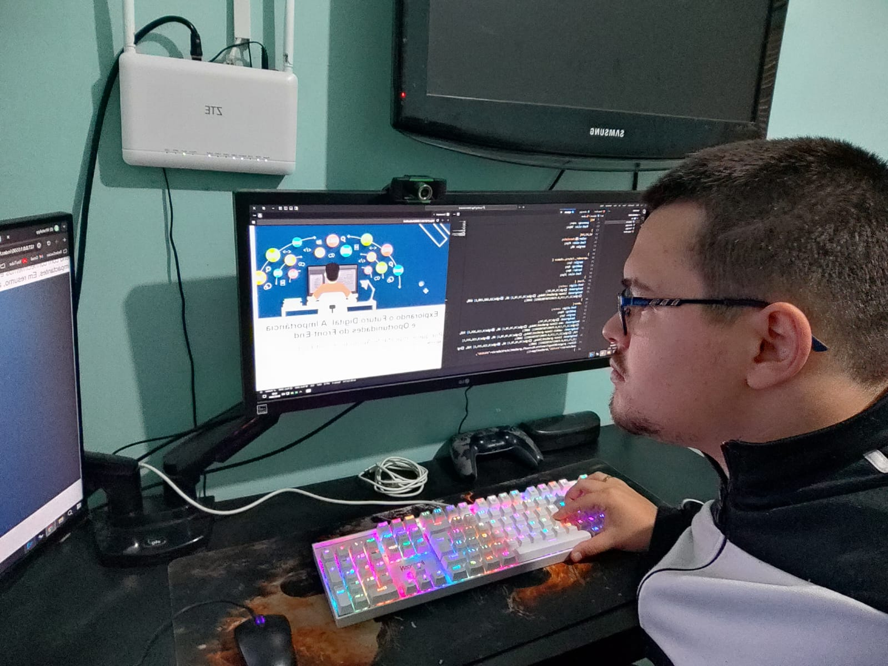

Explorando o Futuro Digital: A Importância e Oportunidades do Front-End

Por que é Importante Aprender Front-End?
Aprender front-end é crucial. Nos dias de hoje por várias razões fundamentais. Em
primeiro lugar, o front-end é a face visível de qualquer aplicação web ou móvel. É o que os
usuários veem, interagem e julgam instantaneamente. Portanto, a habilidade de desenvolver
uma interface de usuário (UI) intuitiva, responsiva e esteticamente agradável é essencial
para garantir uma boa experiência do usuário (UX). Além disso, o front-end está intimamente
ligado à usabilidade e acessibilidade. Dominar suas tecnologias, como HTML, CSS e
JavaScript, permite criar sites e aplicativos que não apenas funcionam bem em diferentes
dispositivos e navegadores, mas também são acessíveis para pessoas com diferentes
necessidades e habilidades.
Front-End Tem Futuro?
Sim, o front-end tem um futuro promissor. Com o crescimento contínuo da internet e o
aumento no uso de dispositivos móveis e tecnologias emergentes, como a Internet das Coisas
(IoT), a demanda por desenvolvedores front-end competentes está em alta. Empresas estão cada
vez mais focadas na experiência do usuário, o que coloca os desenvolvedores front-end em uma
posição estratégica para impulsionar a inovação e o crescimento digital. Além disso,
frameworks modernos e bibliotecas como React, Vue.js e Angular continuam a evoluir,
oferecendo novas maneiras de criar interfaces interativas e dinâmicas. Isso mantém o
front-end relevante e emocionante, com constantes oportunidades de aprendizado e
desenvolvimento profissional.
Quais São as Chances Se Aprender Tudo de Front-End?
Dominar o front-end abre diversas oportunidades no mercado de trabalho de tecnologia.
As empresas buscam profissionais versáteis que não apenas desenvolvam interfaces atraentes,
mas também compreendam os princípios de design, usabilidade e performance. Com habilidades
avançadas em HTML, CSS, JavaScript e frameworks modernos, como mencionado anteriormente,
você pode aspirar a papéis como desenvolvedor front-end sênior, especialista em UX/UI,
arquiteto de front-end, entre outros. Além disso, muitos desenvolvedores front-end expandem
suas habilidades para trabalhar com desenvolvimento full-stack, combinando front-end com
conhecimentos em back-end e bancos de dados, ampliando ainda mais suas oportunidades de
carreira e contribuindo para projetos mais complexos e impactantes. Em resumo, aprender
front-end não é apenas importante, mas também oferece um futuro vibrante e cheio de
oportunidades no campo da tecnologia.

Então, por que escolhi este curso?
Escolhi este curso porque estou determinado a evoluir e buscar novas experiências na
linguagem HTML, CSS e JavaScript.
Acredito que dominar essas tecnologias não apenas me permitirá criar sites visualmente
atraentes e funcionais, mas também abrirá portas para um futuro promissor como criador de
sites. Almejo trabalhar em uma empresa renomada onde possa aplicar minhas habilidades para
desenvolver projetos inovadores e impactantes. Acredito que o front-end é o ponto de partida
ideal para minha jornada no mundo digital, pois combina criatividade com habilidades
técnicas e oferece a oportunidade de melhorar constantemente minhas habilidades de design e
desenvolvimento. Estou entusiasmado com a ideia de contribuir para a experiência do usuário,
garantindo que cada site que eu crie não apenas cumpra, mas supere as expectativas dos
usuários. Com determinação e foco, pretendo não apenas aprender o essencial, mas também me
aprofundar em frameworks modernos e técnicas avançadas que me permitirão estar na vanguarda
da tecnologia web. Escolher este curso é mais do que uma decisão educacional; é um passo
firme direção uma carreira gratificante e cheia de oportunidades. Estou pronto para
enfrentar os desafios, crescer profissionalmente e alcançar meus objetivos como um criador
de impacto no universo digital.
Quem é o Lucas Labatut
Lucas Labatut é a pessoa que iniciou meu aprendizado no desenvolvimento front-end.
Foi com ele que descobri meu interesse nessa área. Sempre o vi trabalhando com front-end e
me interessei, então pedi para que me ensinasse. Ele possui conhecimento intermediário em
HTML, CSS e JavaScript. Atualmente, estamos trabalhando juntos em um projeto, formando uma
equipe agora.